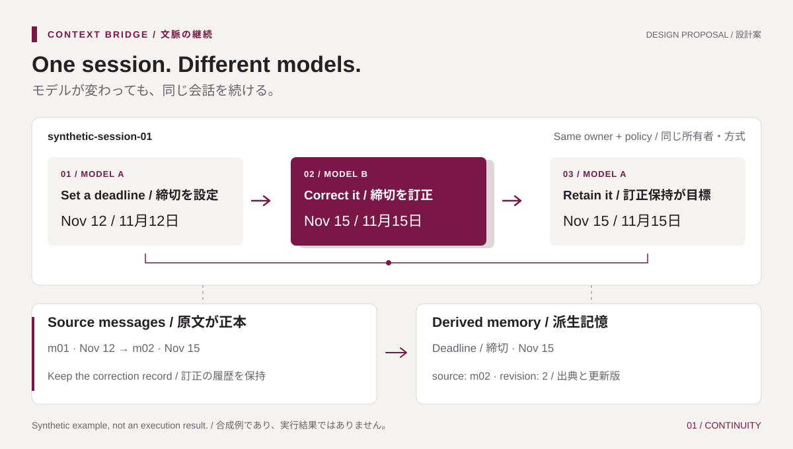

Preserve the task
Carry goals, constraints, facts, and progress across local model A → B → A. Each user keeps a separate conversation and memory scope.
INDEPENDENT LLM RESEARCH
A conversation is more than its last message. We investigate how goals, corrections and evidence can survive a change of language model.
01 / RESEARCH
More than the last message.
The purpose, the evidence, and the next step.
Carry goals, constraints, facts, and progress across local model A → B → A. Each user keeps a separate conversation and memory scope.
Investigate how memory updates handle changed facts, conflicting statements, and missing information.
Compare full history, rolling summaries, and Mem0 under fixed conditions. Measure answer-input tokens, quality, and memory-processing overhead.
02 / THE HANDOFF
A synthetic illustration of the research question.
No live model, API call, or benchmark result.
A fictional literature review begins with a goal, a language constraint, and a deadline.
Expected behavior: preserve the goal and constraint at the first handoff.
03 / SELECTED DESIGN
Route A: Go bridge + Ollama + Mem0 OSS.
Selected for implementation; integration is not yet measured.
Designed to own sessions, access rules, model selection and context assembly. Original messages remain the source of truth when the answer model changes.
Proposed worker for scoped memory extraction and retrieval, source references and Qdrant local storage.
Selected runtime for local answer, helper and embedding models. Inference capacity may be shared; user conversations and memories remain separate.

First milestone: retain a correction across A → B → A and deny access from another user. The handoff example uses fixed data, not a working chat application.
04 / RESEARCH METHOD
Review actual code, licenses and local execution requirements.
Use synthetic data to check contracts, isolation and recovery.
Fix cases, baselines and scoring before final evaluation.
Report measured results, missing data, costs and limitations together.
05 / OPEN NOTEBOOK
Start with the selected architecture and implementation status.
PLAN.md is the single action checklist.